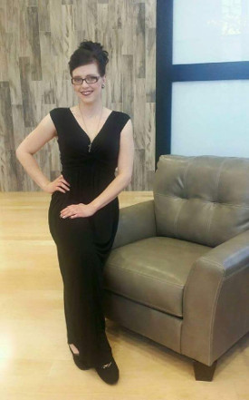

Last updated: July 20, 2018
Career Buddy:Sarah Heckendorn
Chelsea David
Hi, my name is Chelsea. I am currently learning how to create websites and apps with training through CNM
Ingenuity's DeepDive Coding Bootcamp that will help me achieve my goal of full time employment and a better life financially
for myself and my family. Are you currently in web development?
Hi, my name is Chelsea. I am currently learning how to create websites and apps with training through CNM
Ingenuity's DeepDive Coding Bootcamp that will help me achieve my goal of full time employment with a reputable
company where I can grow and further my skillset, while also providing a better life financially
for myself and my family. Are you currently in the market or know of someone who is?
Left Image - The image to the left is a current reflection of how i am currently feeling 3 weeks into the bootcamp.
I feel very elementary in regards to my learning retention and also a bit overwhelmed with all of the information.
Right Image- The image on the right indicates where I hope to see myself 3 years from now.
In three years I hope to be living on a beach in Florida. With hard work, dedication, and tenacity, I hope to achieve my goal
The dictionary defines balance as:
In terms of my own life, balance is essential. When I am not at my computer, I can be found, most times, outdoors
practicing my archery skills or riding my bike along trails in my neighborhood. the indoor to outdoor balance
really helps me hit the reset button and get back to projects with a fresh set of eyes.
What - Develop websites & apps
How - Through Training I hope to strengthen my coding and social skills
Why -A better life financially for my family
The main thing I have learned this week would have to be patience. Whether it be learning
data design, UI/UX, or DOM, I feel I have really started to figure out the "just breathe" moto, and
adapt to my learning styles. I have my work cut
out for me, but as long as I apply the necessary tools, and remember to breathe, I believe I be successful
at the end of this bootcamp. Though, I can now proudly say, I am familiar with basic HTML layout and format
This week, for me, felt wildly more in depth than previous week. This week we were able to take a deep dive
look into methods, accessors, mutator, and state variables, along with a few mySQL commands, and constructors.
I am feeling fairly confident in the knowledge retention I have finishing out this week. Though there can be some
uncomfortable moments I am happy to say I was able to adapt and overcome while still staying on track.